Giảm nhiễu¶
Khi thực hiện bản render cuối, việc giảm nhiễu càng nhiều càng tốt là điều quan trọng. Ở đây chúng ta sẽ bàn một số mẹo tuy vi phạm các định luật vật lý nhưng đặc biệt quan trọng khi cần render animation trong khoảng thời gian hợp lý. Hãy nhấp để phóng to các ảnh ví dụ nhằm thấy rõ sự khác biệt về nhiễu.
Path Tracing¶
Cycles dùng path tracing kèm next event estimation, vốn không giỏi render mọi loại hiệu ứng ánh sáng như caustics, nhưng có lợi thế là render được các scene lớn hơn và chi tiết hơn so với một số thuật toán render khác. Điều này là do ta không cần lưu trong bộ nhớ những thứ như photon map, và do ta có thể giữ các tia tương đối liên kết (coherent) để dùng image cache theo yêu cầu, so với ví dụ bidirectional path tracing.
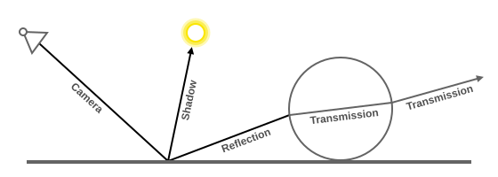
Chúng ta làm ngược lại với thực tế: truy vết tia sáng từ camera vào trong scene rồi tới các nguồn sáng, thay vì từ nguồn sáng vào scene rồi mới vào camera. Cách này có lợi thế là không lãng phí những tia sáng rồi sẽ không bao giờ đến camera, nhưng đồng thời cũng có nghĩa là khó tìm ra một số đường truyền ánh sáng có thể đóng góp rất nhiều. Các tia sáng sẽ được gửi hoặc theo BSDF của bề mặt, hoặc theo hướng của các nguồn sáng đã biết.
Xem thêm
Để biết thêm chi tiết, hãy xem tài liệu Light Paths và Sampling.
Nguồn gốc của nhiễu¶
Để hiểu nhiễu có thể đến từ đâu, hãy lấy ví dụ scene dưới đây. Khi truy vết một tia sáng đến vị trí được đánh dấu bằng vòng tròn trắng trên một chấm đỏ, ảnh thứ hai bên dưới cho thấy khái quát những gì diffuse shader "nhìn thấy".
Để tìm ánh sáng phản xạ từ bề mặt này, ta cần lấy màu trung bình từ tất cả các pixel này. Hãy chú ý vệt glossy highlight trên quả cầu, và đốm sáng mà nguồn sáng chiếu lên bức tường gần đó. Những điểm sáng nóng này sáng hơn nhiều so với các phần khác của ảnh và sẽ đóng góp đáng kể vào ánh sáng của pixel này.
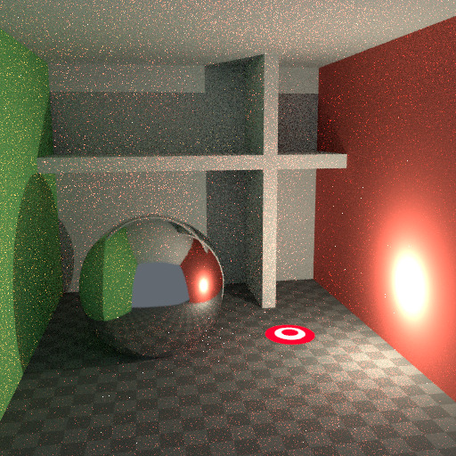 Scene.¶ |
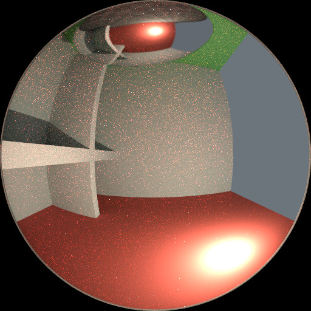 Irradiance tại điểm shading.¶ |
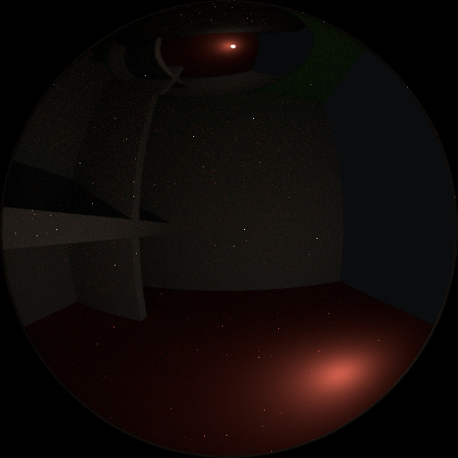 Các highlight được phát hiện.¶ |


Nguồn sáng này là nguồn đã biết nên vị trí của nó đã được biết sẵn, nhưng các glossy highlight do nó gây ra lại là chuyện khác. Tốt nhất mà path tracing có thể làm là phân bố các tia sáng ngẫu nhiên khắp bán cầu, hy vọng tìm thấy hết các điểm sáng quan trọng. Nếu với pixel này ta bỏ sót một điểm sáng nào đó nhưng lại tìm thấy nó ở pixel khác, kết quả là nhiễu. Càng lấy nhiều mẫu, xác suất bao phủ hết mọi nguồn sáng quan trọng càng cao.
Với một số mẹo, ta có thể giảm nhiễu này. Nếu làm mờ các điểm sáng, chúng trở nên to hơn và bớt chói hơn, nhờ đó dễ tìm hơn và ít nhiễu hơn. Cách này không cho kết quả giống hệt, nhưng thường đủ gần khi nhìn qua phản xạ diffuse hoặc glossy mềm. Dưới đây là ví dụ dùng Glossy Filter và Light Falloff.
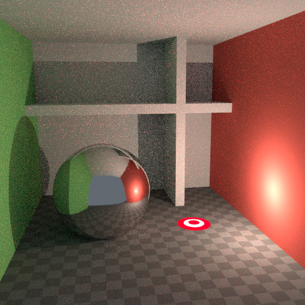 Dùng Glossy Filter & Light Falloff.¶ |
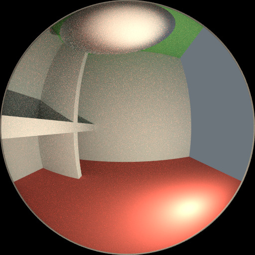 Irradiance tại điểm shading.¶ |
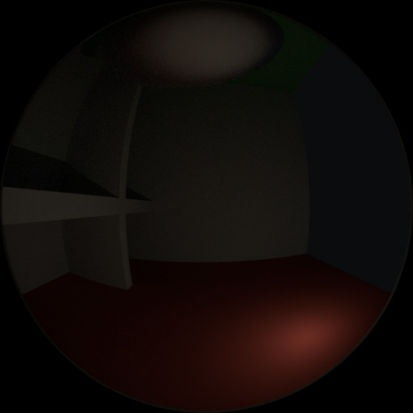 Các highlight được phát hiện.¶ |


Bounces¶
Trong thực tế, ánh sáng sẽ bounce một số lần khổng lồ do tốc độ ánh sáng rất cao. Trên thực hành, càng nhiều bounce càng phát sinh nhiễu, và có lẽ nên dùng thứ gì đó giống preset Limited Global Illumination trong mục Light Paths, vốn dùng ít bounce hơn cho các loại shader khác nhau. Bề mặt diffuse thường chấp nhận được với ít bounce, bề mặt glossy cần thêm một ít, còn transmission shader như thủy tinh thường cần nhiều nhất.
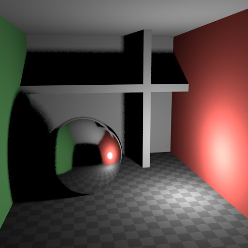 Không bounce.¶ |
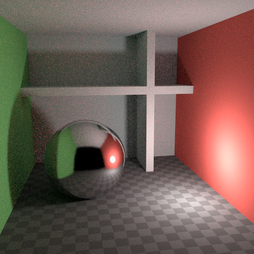 Tối đa hai bounce.¶ |
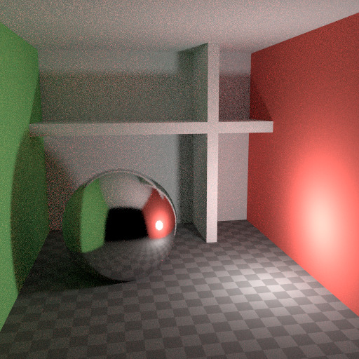 Tối đa bốn bounce.¶ |


Cũng quan trọng là dùng màu shader không có thành phần bằng 1.0 hoặc giá trị gần bằng đó; hãy cố giữ giá trị tối đa ở mức 0.8 trở xuống và làm nguồn sáng của bạn sáng hơn. Trong thực tế, bề mặt hiếm khi phản xạ hoàn hảo toàn bộ ánh sáng, nhưng dĩ nhiên vẫn có ngoại lệ; thủy tinh thường cho hầu hết ánh sáng đi qua, đó là lý do ta cần nhiều bounce hơn ở đó. Giá trị cao của các thành phần màu có xu hướng gây nhiễu vì khi đó cường độ ánh sáng không giảm bao nhiêu khi bounce khỏi từng bề mặt.
Caustics và Filter Glossy¶
Caustics là nguồn nhiễu quen thuộc, gây ra Fireflies. Chúng xuất hiện vì renderer khó tìm được các specular highlight được nhìn qua phản xạ glossy mềm hoặc diffuse. Có tùy chọn No Caustics để tắt hẳn phần glossy nằm sau một phản xạ diffuse. Nhiều renderer thường tắt caustics theo mặc định.
Cài đặt mặc định.¶ |
Caustics bị tắt.¶ |
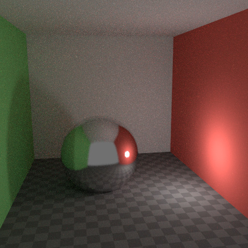 Filter Glossy lớn hơn 0.¶ |


Tuy nhiên, dùng No Caustics sẽ làm mất một phần ánh sáng, và vẫn không xử lý được trường hợp phản xạ glossy sắc nét được nhìn qua một phản xạ glossy mềm. Có tùy chọn Filter Glossy để giảm nhiễu trong những trường hợp ấy, với cái giá là độ chính xác. Tùy chọn này sẽ làm mờ phản xạ glossy sắc nét để dễ tìm hơn, bằng cách tăng Roughness của shader.
Các ảnh trên thể hiện cài đặt mặc định, không caustics, và filter glossy đặt thành 1.0.
Light Falloff¶
Trong thực tế, ánh sáng trong chân không luôn suy giảm theo tỉ lệ 1/(distance^2). Tuy nhiên, khi khoảng cách tiệm cận 0, giá trị này tiến tới vô cùng và ta có thể nhận được các điểm rất sáng trong ảnh. Đây chủ yếu là vấn đề với ánh sáng gián tiếp, nơi xác suất trúng một điểm nhỏ nhưng cực sáng như vậy là thấp nên hiếm khi xảy ra. Đây là công thức điển hình tạo ra Fireflies.
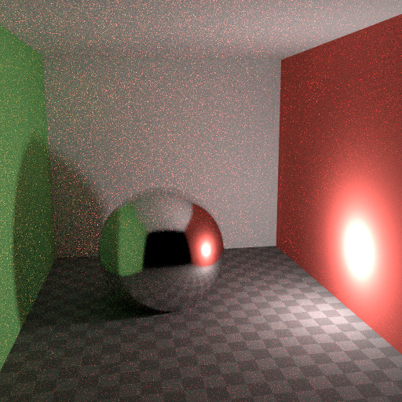 Falloff cứng.¶ |
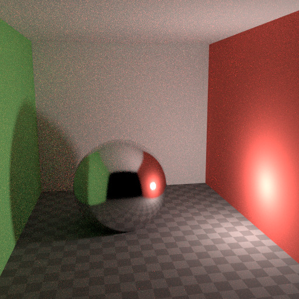 Falloff mềm.¶ |


Để giảm vấn đề này, node Light Falloff có một hệ số Smooth, có thể dùng để giảm cường độ tối đa mà nguồn sáng đóng góp cho các bề mặt lân cận. Các ảnh trên thể hiện falloff mặc định và giá trị smooth 1.0.
Multiple Importance Sampling¶
Material có emission shader có thể được cấu hình để dùng Multiple Importance Sampling (Cài đặt Material). Điều này có nghĩa là chúng sẽ nhận được các tia gửi thẳng đến, thay vì chỉ được tìm thấy nhờ các tia bounce ngẫu nhiên. Với các nguồn sáng mesh rất sáng, cách này giảm nhiễu đáng kể. Tuy nhiên, khi phần phát sáng không đặc biệt sáng, việc này sẽ lấy mẫu từ các nguồn sáng khác sáng hơn — vốn cần được tìm theo cách này.
Cài đặt tối ưu ở đây khó đoán; có thể phải thử và sai, nhưng thường thì khá rõ ràng rằng một object chỉ hơi phát sáng có lẽ chỉ đóng góp ánh sáng cục bộ, trong khi một mesh light được dùng làm nguồn sáng thì cần bật tùy chọn này. Dưới đây là ví dụ trong đó các quả cầu phát sáng đóng góp rất ít vào ánh sáng, và ảnh render ít nhiễu hơn một chút khi tắt Multiple Importance trên chúng.
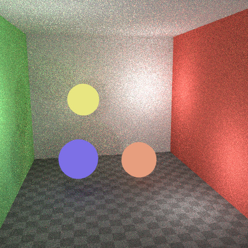 Multiple Importance tắt.¶ |
Multiple Importance bật.¶ |


Nền của world cũng có tùy chọn Multiple Importance (Settings). Tùy chọn này chủ yếu hữu ích cho các environment map có những đốm sáng nhỏ thay vì mượt đều. Khi đó tùy chọn này sẽ, trong một bước tiền xử lý, xác định các đốm sáng và gửi tia sáng thẳng đến chúng. Một lần nữa, việc bật tùy chọn này có thể lấy mẫu từ những nguồn sáng quan trọng hơn nếu nó không thực sự cần thiết.
Glass và Transparent Shadows¶
Khi tắt caustics, bóng của thủy tinh có thể quá tối, còn với filter glossy thì caustics có thể quá mềm. Ta có thể tạo một glass shader dùng Glass BSDF khi được nhìn trực tiếp, và Transparent BSDF khi được nhìn gián tiếp. Transparent BSDF có thể dùng cho bóng trong suốt để tìm nguồn sáng xuyên thẳng qua bề mặt, cho bóng có màu đúng, nhưng không có caustics. Node Light Path được dùng để xác định khi nào dùng shader nào trong hai shader đó.

Glass shader tối ưu.¶
Ở trên ta có thể thấy bố cục node dùng cho mẹo xuyên thủy tinh; bên trái là bản render có bóng tối do thiếu caustics, còn bên phải là bản render áp dụng mẹo này.
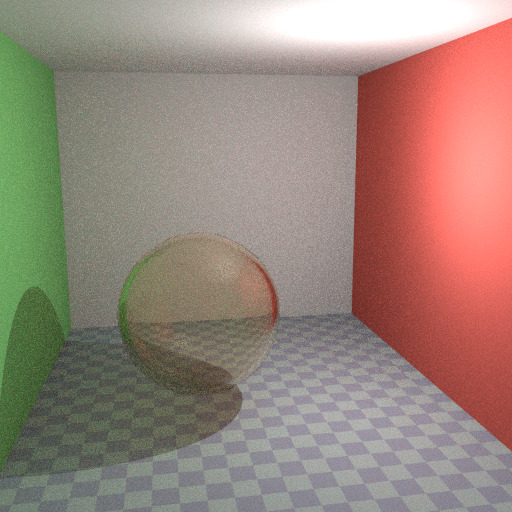 Glass BSDF mặc định.¶ |
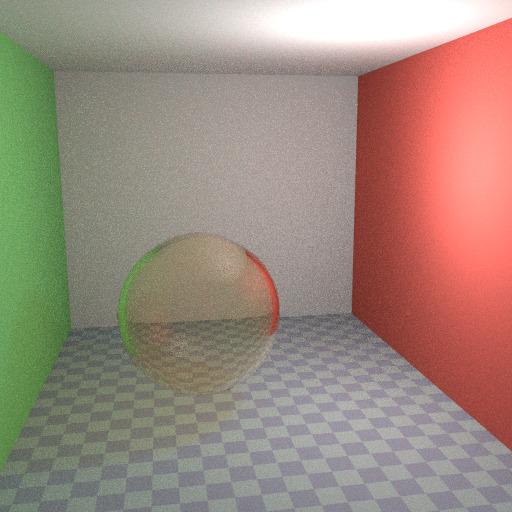 Glass Shader tối ưu.¶ |


Light Portals¶
Khi render một scene nội thất ban ngày mà phần lớn ánh sáng đi vào qua cửa sổ hoặc lối cửa, integrator khó lòng tìm đường đến chúng. Để khắc phục, hãy dùng Light Portals. Sau đó bạn sẽ cần chỉnh hình dạng của portal cho khớp với khoảng mở mà bạn đang muốn lấp.
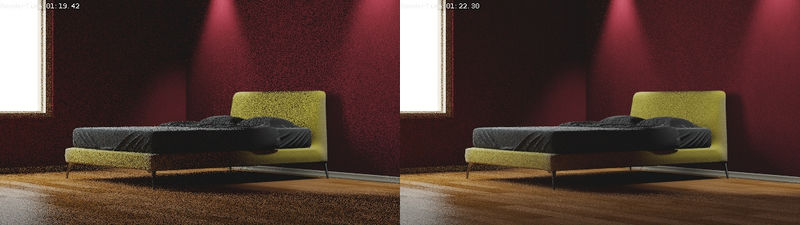
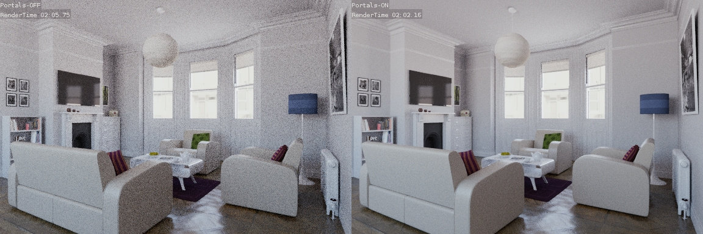
Denoising¶
Ngay cả với mọi cài đặt đã mô tả ở trên, vẫn sẽ còn sót chút nhiễu render cho dù bạn dùng bao nhiêu mẫu đi nữa. Để xử lý, có một kỹ thuật hậu xử lý giúp dọn sạch phần nhiễu cuối cùng. Để dùng nó, hãy bật Denoising trong tab Render của Properties.
Dưới đây là một bản render ví dụ bởi The Pixelary.
Clamp Fireflies¶
Lý tưởng là với tất cả các mẹo trên, Fireflies sẽ bị loại bỏ hoàn toàn, nhưng chúng vẫn có thể xảy ra. Vì vậy, cường độ mà mỗi mẫu tia sáng riêng lẻ đóng góp vào một pixel có thể bị clamp về một giá trị tối đa bằng cài đặt Clamp của integrator.
Nếu đặt quá thấp, cách này có thể làm mất các highlight trong ảnh — thứ có thể cần giữ lại cho các hiệu ứng camera như bloom hoặc glare. Để gỡ bỏ bài toán nan giải này, thường hữu ích khi chỉ clamp các bounce gián tiếp, để nguyên các highlight nhìn thấy trực tiếp bởi camera.
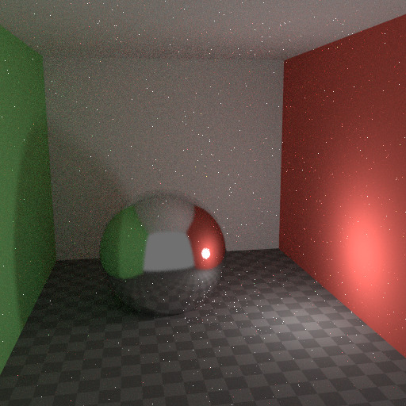 Không Clamp (0).¶ |
Với Clamp đặt thành 4.¶ |